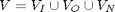
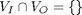
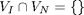
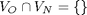
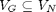
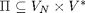
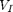

PAGE BREAK
Contents
- ABSTRACT
- 1 Executable Grammars
- 1.1 IOG: the Input/Output Grammar
- 1.2 GEM: the Grammar Executing Machine
- 1.3 Running GEM
- 1.4 GEM Implementation
- 1.5 How GEM works
- 2 GEM Capabilities
- 2.1 Predefined Character-class CFGs and IOGs.
- 2.2 Whitespace and IOG nowhite
- 2.2.1 Define function scan and redefine GEM
- 2.3 IOG pretty, the antidote to nowhite
- 2.4 IOG inversion
- 2.5.1 Inversion Example
- 3 Extending The IOGs
- 3.1 Multiple character input and output symbols.
- 3.1.1 Redefine scan, pretty and GEM
- 3.2 Arithmetic expressions
- 3.2.1 Postfix
- 3.2.2 Prefix
- 3.2.3 Intel X86 code
- 3.3 Using Regular Expressions in IOGs
- 3.4 Transforming regular expressions back to IOGs
- 3.4.1 The expression IOG as an example using *
- 3.4.2 Add Kleene +
- 4 Making GEM efficient and reliable
- 4.1 Examples of using gem2
- 4.2 Intel X86 Assembler
- 4.4 A calculator
- 4.5 When things go wrong
- 5 Summary
- Reference
- Signature
PAGE BREAK
ABSTRACT
Can a tiny compiler-compiler grow into something useful?
by Bill McKeeman
The grammars presented here are like computer programs in that they accept input and produce output. The output may be another grammar, which can in turn be used to make yet another grammar. The question is: how far can one go?
I do not know, but let us at least get started.
Note: I have used this material only for teaching. I do not know of any practical or theoretical consequences. The material has some resonance with Guy Steele's 1998 OOPSLA talk Growing a Language.
Note: This presentation was prepared by the MATLAB publish feature which accepts a commented MATLAB script as input. This paragraph came from a MATLAB comment. The grey-bar sections are MATLAB code.
format compact % help MATLAB save screen space
Immediately following the each code section is the corresponding output (if any). There was no output from the format statement above.
PAGE BREAK
1 Executable Grammars
It is well-known that the rewriting rules of a Context-free Grammar can be mechanically applied, and that if some sequence of applications results in a parse, that parse is correct. The trick is, of course, in finding the correct sequence of applications.
The Grammar Executing Machine (GEM) presented here can do that, with reasonable efficiency, executing its input grammar one character at a time.
Topics
- Input/Output Grammar (IOG)
- GEM primitives
- How GEM works
- Basic GEM capabilities
- Extending IOGs
- Efficiency and convenience
- Compiling
- Debugging
PAGE BREAK
1.1 IOG: the Input/Output Grammar

An IOG satisfies the following constraints:
- 
- 
- 
- 
- 
- 
When is empty, an IOG is a conventional CFG with terminal symbols .
There are some initial restrictions
- Whitespace is not allowed between symbols.
- The input, output and phrase name symbols are all single-character.
- The IOG must not be left-recursive.
PAGE BREAK
1.2 GEM: the Grammar Executing Machine
GEM is a Grammar Executing Machine. It can be thought of as a function
o = GEM(i, g)
where i is the input text, o is the resulting output text, and g is the text of the IOG being executed. The final argument g can be thought of as the stored program in a Von Neumann computer.
GEM is made available for use in this talk by the following MATLAB code
G = gem(); % instantiate the object GEM = G.run; % GEM is a function
PAGE BREAK
1.3 Running GEM
The simplest possible IOG is applied to the null string
fprintf('res=%s', GEM('', 'r=;'));
res=
IOG g1 shows the use of ' and " to delimit members of and respectively.
g1 = 'r=''x''"y";'; fprintf('%s\n', g1);
r='x'"y";
fprintf('res=%s',GEM('x', g1));
res=y
IOG g2 shows the use of additional rules to describe alternatives
g2 = 'r=s;s=''1'';s=''2'';'; fprintf('%s\n', g2);
r=s;s='1';s='2';
fprintf('res=%s', GEM('1', g2));
res=
PAGE BREAK
1.4 GEM Implementation
The (GEM) machine itself is implemented in C file iog.c. Function iog is called from MATLAB.
The following 80 or so lines of C code execute IOGs. The compiled C code takes a few nanoseconds to execute a step.
The MEX file iog.c is an example of no-frills code that runs on the edge of catastophe. The slighest user error can bring all of MATLAB down in a rubble of bits. It is meant to illustrate an algorithm, as contrasted to being actually used. A more robust version can be found in file iog2.c.
dbtype iog.c 113:190
113 /* execute grammar */
114 static void
115 gem(void) {
116 for (;;) {
117 if (traceit) TRACE(); /* iog(i,g,'-traceGem') */
118 if (pss>=STACKLIM) error("PARSE stack overflow");
119 if (ess>=STACKLIM) error("BACK stack overflow");
120 switch (mode) {
121 /* executing rules */
122 case PARSE:
123 switch (*p) {
124 ALPHA /* call new rule */
125 ps++; *ps = p; /* save return address */
126 p = p0; mode = SEARCH; break; /* search from beginning */
127 case '\'': /* input */
128 p++; /* skip over 1rst ' */
129 if (*p == *i) {i++; p++; p++;} /* read-match */
130 else {mode = BACK; p--; p--;} /* read-mismatch */
131 break;
132 case '"': /* output */
133 p++; o++; /* skip over 1rst " */
134 *o = *p; /* move literal to output*/
135 p++; p++; break; /* skip over 2nd " */
136 case ';': /* rule end (parsing) */
137 p--; /* back up over ; */
138 es++; *es = p; /* save backup pointer */
139 if (pss < 0) return; /* empty stack: success */
140 p = *ps; ps--; /* return from rule */
141 p++; break; /* skip over rule name */
142 default: /* bad char in grammar */
143 error("Unexpected character (PARSE)");
144 }
145 break; /* end of parse step */
146
147 /* backtracking */
148 case BACK:
149 switch (*p) {
150 ALPHA /* un-return from rule */
151 ps++; *ps = p; /* save return address */
152 p = *es; es--; break; /* end of previous rule */
153 case '\'': /* input */
154 i--; /* un-get input */
155 p--; p--; p--; break; /* un-skip literal */
156 case '"': /* output */
157 o--; /* un-put output */
158 p--; p--; p--; break; /* un-skip literal */
159 case '=': /* rule begin (backtracking) */
160 mode = SEARCH; /* forward again */
161 p++; break; /* skip by = */
162 default:
163 error("Unexpected character (BACK)");
164 }
165 break; /* end of back step */
166
167 /* searching for a rule */
168 case SEARCH:
169 switch (*p) {
170 ALPHA /* phrase name */
171 p++; break; /* skip over name */
172 case '\'': case '"': /* input/output */
173 p++; p++; p++; break; /* skip over 'x' or "x" */
174 case ';': /* rule coming */
175 p++; /* skip over ; */
176 if (p-p0==pN) { /* end of code */
177 if (pss == 0) error("Unparsable input");
178 p = *ps; ps--; /* back out one rule */
179 mode = BACK; /* reverse direction */
180 p--; break; /* un-skip over ; */
181 }
182 if (*p==**ps) mode = PARSE; /* lhs is phrase name */
183 p++; p++; break; /* skip over lhs = */
184 default:
185 error("Unexpected character (SEARCH)");
186 }
187 break;
188 }
189 }
190 }
PAGE BREAK
1.5 How GEM works
The grammars are symmetric:
- they can be executed right-to-left
- they can be executed left-to-right.
When executed "backward," the effect is to exactly undo the work that was done going forward.
At each step during PARSE, GEM switches on the current character, interpreting it as one of:
- a recursive call, or
- move ahead in the input (a shift), or
- move a character to the output, or
- end of a grammar rule (a reduce).
When a recursive call is needed, the mode shifts to SEARCH which linearly passes over the IOG. Once a matching rule is found, the mode returns to PARSE.
Whenever the actual input fails to match the required input symbol in the IOG, the current trial parse fails and mode BACK is entered.
During mode BACK the IOG is un-executed backward.
If, at some point, the input is entirely used and all recursions have returned, GEM reports the output.
PAGE BREAK
2 GEM Capabilities
2.1 Predefined Character-class CFGs and IOGs.
Character classes analogous to functions isletter, isdigit and the like in C occur often
Eight such classes of symbols are pre-entered so that the GEM user never needs to define them explicitly. For example, grammar digitIOG defines phrase name D to pass digits. Read the first rule as "if you see a zero, emit a zero."
D = '0' "0"; D = '1' "1"; D = '2' "2"; D = '3' "3"; D = '4' "4"; D = '5' "5"; D = '6' "6"; D = '7' "7"; D = '8' "8"; D = '9' "9";
The list of pre-entered CFG and IOG character classes is
digitCFG (defines phrase d, accept any digit) upperCFG (defines phrase l, accept any upper case letter) lowerCFG (defines phrase l, accept any lower case letter) asciiCFG (defines phrase a, accept any character) digitIOG (defines phrase D, (above) accept and pass on any digit) upperIOG (defines phrase L, accept and pass on any upper case letter) lowerIOG (defines phrase L, accept and pass on any lower case letter) asciiIOG (defines phrase A, accept and pass on any character)
One or more of these grammars can be appended to any grammar to be input to GEM. For example, here is an example that accepts any digit and passes it to the output.
fprintf('%s', GEM('7', ['r=D;' G.digitIOG])); % MATLAB string concatenation
7
PAGE BREAK
2.2 Whitespace and IOG nowhite
People like whitespace; GEM does not. Therefore the first useful IOG is a deblanker named nowhite. Since GEM always does first things first, nowhite discards blanks and newlines, passes and entries (including literal blanks and newlines) unchanged to the output, and also as a default (last rule) passes everything else to the output. Because phrase name A was used, character class grammar asciiIOG must be appended.
g = p g; g = ; p = ' '; p = ' '; p = I A I; p = O A O; p = A; I = ''' "'" O = '"' """ asciiIOG
PAGE BREAK
A de-whited nowhite has to be prepared by hand ahead of time; it is available as a field of G.
fprintf('%s', G.nowhite);
g=pg;g=;p=' ';p='
';p=IAI;p=OAO;p=A;I='''"'";O='"'""";A='
'"
";A=' '" ";A='!'"!";A='"'""";A='#'"#";A='$'"$";A='%'"%";A='&'"&";A='''"'";A='('"(";A=')'")";A='*'"*";A='+'"+";A=','",";A='-'"-";A='.'".";A='/'"/";A='0'"0";A='1'"1";A='2'"2";A='3'"3";A='4'"4";A='5'"5";A='6'"6";A='7'"7";A='8'"8";A='9'"9";A=':'":";A=';'";";A='<'"<";A='='"=";A='>'">";A='?'"?";A='@'"@";A='A'"A";A='B'"B";A='C'"C";A='D'"D";A='E'"E";A='F'"F";A='G'"G";A='H'"H";A='I'"I";A='J'"J";A='K'"K";A='L'"L";A='M'"M";A='N'"N";A='O'"O";A='P'"P";A='Q'"Q";A='R'"R";A='S'"S";A='T'"T";A='U'"U";A='V'"V";A='W'"W";A='X'"X";A='Y'"Y";A='Z'"Z";A='['"[";A='\'"\";A=']'"]";A='^'"^";A='_'"_";A='`'"`";A='a'"a";A='b'"b";A='c'"c";A='d'"d";A='e'"e";A='f'"f";A='g'"g";A='h'"h";A='i'"i";A='j'"j";A='k'"k";A='l'"l";A='m'"m";A='n'"n";A='o'"o";A='p'"p";A='q'"q";A='r'"r";A='s'"s";A='t'"t";A='u'"u";A='v'"v";A='w'"w";A='x'"x";A='y'"y";A='z'"z";A='{'"{";A='|'"|";A='}'"}";A='~'"~";Since the character class CFGs and IOGs are big, it pays to suppress the details when looking at grammars that use them. Here is nowhite again:
idx = strfind(G.nowhite, 'A='); % the start of asciiIOG fprintf('%s', G.nowhite(1:idx-1)); % don't print asciiIOG, fprintf('asciiIOG\n'); % just print it's name instead
g=pg;g=;p=' ';p=' ';p=IAI;p=OAO;p=A;I='''"'";O='"'""";asciiIOG
PAGE BREAK
2.2.1 Define function scan and redefine GEM
Define a MATLAB function to run nowhite and at the same time we can redefine GEM to automatically scan its second parameter (the grammar).
scan = @(txt)G.run(txt, G.nowhite); % (Read the @ as lambda.)
GEM = @(txt,c)G.run(txt, scan(c));
Test scan:
scan('x Y z')
ans = xYz
PAGE BREAK
2.3 IOG pretty, the antidote to nowhite
Returning nowhite to human-readable form can be accomplished by IOG pretty, which puts the minimal amount of blanks and newlines back. IOG pretty is an example of its own output (as before, the character class definitions lowerIOG, upperIOG and asciiIOG are supressed in these slides).
Note that the rule for r precisely describes itself.
idx = strfind(G.pretty, 'L='); fprintf('%s', G.pretty(1:idx-1)); fprintf('lowerIOG upperIOG asciiIOG\n');
g = r g; g =; r = L '=' " " "=" f ';' ";" " "; f = " " p f; f =; p = I A I; p = O A O; p = L; I = ''' "'"; O = '"' """; lowerIOG upperIOG asciiIOG
IOG pretty also serves as a syntax checker for GEM input -- non-grammars will cause a run-time error
PAGE BREAK
2.4 IOG inversion
Systematically interchanging the input and output delimiters (' and ") turns a compiler into decompiler. That is, the inverted IOG then accepts the original output and recreates the input. An inverted inverter is still an inverter.
idx = strfind(G.invert, 'A='); fprintf('%s', G.invert(1:idx-1)); fprintf('asciiIOG\n');
g = p g; g = ; p = ''' """ A ''' """; p = '"' "'" A '"' "'"; p = A; asciiIOG
PAGE BREAK
2.5.1 Inversion Example
Right-associative sum and difference expressions can be expressed naturally in a right-recursive IOG. The output of the IOG sum is the left-to-right sequence of rule applications.
fprintf('%s\n', G.sum);
g = e "0"; e = t '+' e "1"; e = t '-' e "2"; e = t "3"; t = 'x' "4";
string rule to be applied x+x-x 4 t+x-x 4 t+t-x 4 t+t-t 3 t+t-e 2 t+e 1 e 0 g QUIT
exampleparse = GEM('x+x-x', G.sum) % apply sum to 'x+x-x'
exampleparse = 4443210
invertedsum = GEM(scan(G.sum), G.invert); % apply invert to sum fprintf('%s', G.run(invertedsum, scan(G.pretty)));
g = e '0'; e = t "+" e '1'; e = t "-" e '2'; e = t '3'; t = "x" '4';
fprintf('%s\n', GEM(exampleparse, invertedsum)); % apply inverted sum to 4443210
x+x-x
PAGE BREAK
3 Extending The IOGs
3.1 Multiple character input and output symbols.
One can extend nowhite to accept multiple-character input and output symbols. Here is the new version, called nowhite2.
gstr = G.run(G.nowhite2, scan(G.pretty2)); idx = strfind(gstr, 'A ='); fprintf('%s', gstr(1:idx-1)); fprintf('asciiIOG\n');
g = p g; g =; p = ' '; p = ' '; p = I I I; p = O O O; p = ''' r; p = '"' s; p = A; r = '''; r = "'" A "'" r; s = '"'; s = """ A """ s; I = ''' "'"; O = '"' """; asciiIOG
PAGE BREAK
3.1.1 Redefine scan, pretty and GEM
Redefine and run the upgraded versions of the functions.
scan = @(txt)G.run(txt, G.nowhite2); GEM = @(txt,c)G.run(txt, scan(c)); scan('r="Hello World";') % test enhanced scan
ans = r="H""e""l""l""o"" ""W""o""r""l""d";
GEM('', 'r="Hello World";') % use enhanced scan
ans = Hello World
If you want to do a thought-problem, figure out what the new scan will do with an empty input or output symbol, e.g.
scan('r=ab""c')PAGE BREAK
3.2 Arithmetic expressions
Left-associative arithmetic expressions can be described with a trick much like that used to write parsers in functional languages such as ML. In this case the output is PFN (Polish postfix).
idx = strfind(G.postfix, 'L='); % start of expr lowerIOG fprintf('%s', G.postfix(1:idx-1)); fprintf('lowerIOG\n'); fprintf('digitIOG\n');
g = e;
e = t r;
r = '+' t "+" r;
r = '-' t "-" r;
r = ;
t = f s;
s = '*' f "*" s;
s = '/' f "/" s;
s = ;
f = L;
f = D;
f = '(' e ')';
lowerIOG
digitIOG
PAGE BREAK
3.2.1 Postfix
Applying postfix to an arithmetic expression yields the postfix PFN.
fprintf('%s\n', GEM('x*(y+3+4)-x/7', G.postfix));
xy3+4+*x7/-
3.2.2 Prefix
Another IOG (not shown) produces prefix PFN.
fprintf('%s\n', GEM('x*(y+3+4)-x/7', G.prefix));
-*x+y+34/x7
3.2.3 Intel X86 code
In case the postfix PFN example did not look much like a compiler, a small change to the output vocabulary (using multicharacter symbols) results in Intel X86 assembly code:
fprintf('%s', GEM('x*(y+3+4)-x/7', G.x86));
fld x fld y fld =3 fadd fld =4 fadd fmul fld x fld =7 fdiv fsub
PAGE BREAK
3.3 Using Regular Expressions in IOGs
Here is the expression IOG using Kleene *. Because of what is coming, one must use only lower-case letters, and not d, for the rule names.
expr = G.run(scan(G.expr),scan(G.pretty2)); idx = strfind(expr, 'D ='); fprintf('%s', expr(1:idx-1)); fprintf('digitIOG\n');
g = e;
e = t r*;
r = '+' t "+";
r = '-' t "-";
t = f s*;
s = '*' f "*";
s = '/' f "/";
f = D;
f = '(' e ')';
digitIOG
PAGE BREAK
3.4 Transforming regular expressions back to IOGs
GEM knows nothing about the Kleene star, so what must be done to make progress is to transform regular expression grammars back to the original IOG form, as was earlier done with multicharacter input and output symbols. The trick is to replace each
r*
with a new symbol (say R) and add new rules
R = rR; R =;
This trick is applied in two steps: the resulting IOGs are concatenated to make a grammar acceptable to GEM.
The new rules are created by IOG nostar1 which throws away the grammar and makes a few new rules. nostar1 contains 26 rules of the form
s = 'a*' "A=aA;A=;"; s = 'b*' "B=bB;B=;"; ... s = 'z*' "Z=zZ;Z=;";
The r* items are replaced in the grammar by IOG nostar2, a version of pretty containing 26 rules of the form
s = 'a*' "A"; s = 'b*' "B"; ... s = 'z*' "Z";
PAGE BREAK
3.4.1 The expression IOG as an example using *
newrules = GEM(scan(G.expr), G.nostar1);
newgrammar = GEM(scan(G.expr), G.nostar2);
postfix = [newgrammar newrules];
fprintf('%s\n', G.run(postfix, scan(G.pretty2)));
g = e;
e = t R;
r = '+' t "+";
r = '-' t "-";
t = f S;
s = '*' f "*";
s = '/' f "/";
f = D;
f = '(' e ')';
D = '0' "0";
D = '1' "1";
D = '2' "2";
D = '3' "3";
D = '4' "4";
D = '5' "5";
D = '6' "6";
D = '7' "7";
D = '8' "8";
D = '9' "9";
R = r R;
R =;
S = s S;
S =;
Applying the newly generated IOG gives postfix
fprintf('%s\n', GEM('2*(6+3+4)-2/7', postfix));
263+4+*27/-
PAGE BREAK
3.4.2 Add Kleene +
Adding Kleene operator + is accomplished by translating r+ into rr*, then use nostar1 and nostar2 to eliminate the *. The IOG noplus is a version of pretty with 26 rules of the form
s = 'a+' "aa*'; s = 'b+' "bb*'; ... s = 'z+' "zz*';
plusexample = 'r=a+b+;a=''1''"O";b=''2''"T";'; fprintf(GEM(plusexample,G.pretty2));
r = a+ b+; a = '1' "O"; b = '2' "T";
plusres = GEM(plusexample, G.noplus); fprintf(GEM(plusres,G.pretty2));
r = a a* b b*; a = '1' "O"; b = '2' "T";
plusout = GEM('11122', [GEM(plusres,G.nostar2) GEM(plusres,G.nostar1)])
plusout = OOOTT
PAGE BREAK
4 Making GEM efficient and reliable
It is feasible to hack all sorts of enhancements into GEM without changing its nature.
- Tail recursion can be flattened.
- The SEARCH can be precomputed (LL(1)-like capability).
- Predefined character classes can be implemented inside iog.c.
- Internal consistency checks can be added.
Program gem2 provides a more efficient and reliable alternative. It has exactly the capabilities of gem except the character classes act more like builtin functions and less like macro expansions and it has more internal checks.
The call to G.run is as before, except that the names of character class grammars can be added as additional parameters. For instance
G.run(i, g, 'A')
makes the new run act like asciiIOG was appended to g.
The third parameter can contain any of 'TdluaDLUA' standing for Trace and the appended character classes digitCFG.... asciiIOG.
PAGE BREAK
4.1 Examples of using gem2
A new version of pretty puts in or takes out whitespace to make a standard readable version of an IOG.
G=gem2();
pretty=@(txt)G.run(txt, G.pretty, 'LUA') ;
prettypretty = pretty(G.pretty0)
prettypretty = g = b* r*; r = L b* '=' " =" f* b* ';' b* "; "; f = b* " " p; p = I I I; p = I i "'"; p = O O O; p = O o """; p = L '*' "*"; p = L '+' "+"; p = L; i = '''; i = A i; o = '"'; o = A o; I = ''' "'"; O = '"' """; b = ' '; b = ' ';
PAGE BREAK
The name G.GEM is used to implement some common uses of G.run.
postfix = G.GEM('1/y*(3+z)+2*x', 'postfix') % using Kleene *
postfix = 1y/3z+*2x*+
prefix = G.GEM('1/y*(3+z)+2*x', 'prefix')
prefix = +/1*y+3z*2x
sumagain = G.GEM(G.GEM(G.GEM(G.sum, 'invert'), 'invert'), 'pretty')
sumagain = g = e "0"; e = t '+' e "1"; e = t '-' e "2"; e = t "3"; t = 'x' "4";
PAGE BREAK
4.2 Intel X86 Assembler
All compilers eventually have to connect to the underlying hardware. The first step here is an assembler that lays out the bits exactly as required for execution as a subroutine on last year's Intel hardware.
Each subroutine starts with a prolog followed by its own computation followed by an epilog. Just executing the prolog followed by the epilog is a no-op.
EOL = 10; % newline prolog = [ ... 'pushR EBP' EOL ... push the base pointer on the stack 'movRR EBP ESP' EOL ... replace the base with the stack pointer 'pushA' EOL ... save all the general registers ]; epilog = [ ... 'popA' EOL ... restore the general registers 'xor EAX EAX' EOL ... zero return code means success 'leave' EOL ... restore stack 'ret' EOL ... restore program counter ]; assembled = G.run([prolog epilog], G.scan(G.asm))
assembled = 5589E5606133C0C9C3
And then we can run the bits on an X86 (my laptop). Return code zero is computed by the xor and signifies successful completion.
fprintf('rc=%d',G.exe(assembled));
rc=0
Using inversion, we can disassemble the bits to recover the assembler input.
invertedbits = G.run(assembled,G.GEM(G.scan(G.asm),'invert'))
invertedbits = pushR EBP movRR EBP ESP pushA popA xor EAX EAX leave ret
PAGE BREAK
4.4 A calculator
Moving to a higher level, one can compile and run a little 4-register calculator language. As usual, the sequence of calculations is compiled into Intel X86 binary, run, and also decompiled.
make31 = 'b=9;a=3;c=4;a*=b;a+=c;'; compiled = G.run(make31, G.scan(G.calc), 'D'); fprintf('compiled = %s\n', compiled); executed = G.exe(compiled); fprintf('executed = %d\n',executed); invertedcalc = G.GEM(G.scan(G.calc),'invert'); decompiled=G.run(compiled, invertedcalc, 'D'); fprintf('decompiled = %s',decompiled);
compiled = 554889E5B909000000B803000000BA040000000FAFC101D0C9C3 executed = 31 decompiled = b=9;a=3;c=4;a*=b;a+=c;
Unix function atoi
intval = G.exe(G.GEM('376', 'atoi')); fprintf('intval=%d', intval);
intval=376
PAGE BREAK
4.5 When things go wrong
Given a bad IOG, or bad text input, GEM will fail. What GEM will not do is give an acceptable diagnostic (it usually backtracks clear out of the input text before giving up).
When GEM fails, the highwater mark on the parse stack or backup stack usually gives a hint of whatever went wrong. At this point one turns on the trace and either fixes one of the inputs or starts putting print statements in file iog.c or iog2.c. Here is the run of a simple grammar with the trace turned on.
toy='r=a;r=b;a=''x''"1";b=''y''"2";'; G.GEM(toy,'pretty')
ans = r = a; r = b; a = 'x' "1"; b = 'y' "2";
G.run('x',toy,'T');
SEARCH stk:0 **ps:r bak:-1 p: 0 *p:; i: 0 *i:x o:-1 *o:# PARSE stk:0 **ps:r bak:-1 p: 3 *p:a i: 0 *i:x o:-1 *o:# SEARCH stk:1 **ps:a bak:-1 p: 0 *p:; i: 0 *i:x o:-1 *o:# SEARCH stk:1 **ps:a bak:-1 p: 3 *p:a i: 0 *i:x o:-1 *o:# SEARCH stk:1 **ps:a bak:-1 p: 4 *p:; i: 0 *i:x o:-1 *o:# SEARCH stk:1 **ps:a bak:-1 p: 7 *p:b i: 0 *i:x o:-1 *o:# SEARCH stk:1 **ps:a bak:-1 p: 8 *p:; i: 0 *i:x o:-1 *o:# PARSE stk:1 **ps:a bak:-1 p:11 *p:' i: 0 *i:x o:-1 *o:# PARSE stk:1 **ps:a bak:-1 p:14 *p:" i: 1 *i:# o:-1 *o:# PARSE stk:1 **ps:a bak:-1 p:17 *p:; i: 1 *i:# o: 0 *o:1 PARSE stk:0 **ps:r bak:0 p: 4 *p:; i: 1 *i:# o: 0 *o:1
PAGE BREAK
5 Summary
The input/output grammar was defined and shown to have some useful properties; invertible, directly executable, extendible, compilable. How far it can go is an open question.
Reference
http://www.mathworks.com/matlabcentral/fileexchange/20149
Signature
Presented to the Computer Science Colloquium, Stanford, March 4, 2009

Bill McKeeman, MathWorks Fellow
PAGE BREAK